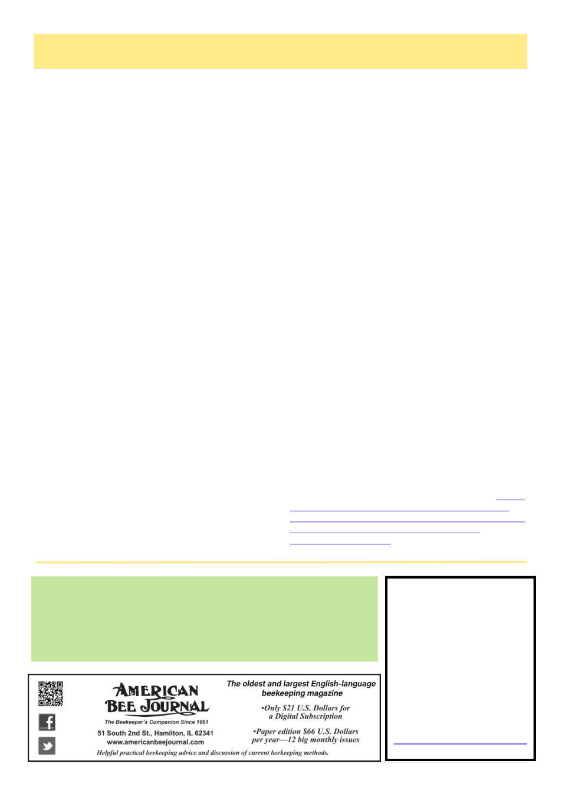

Bee Culture
The Magazine Of American Beekeeping
140 years Experience Today’s techniques -- Tomorrow’s Ideas
ONLY US$24 for a digital Subscription
www.BeeCulture.com for details
Australia’s
Honeybee News
“The Voice of the Beekeeper”
The Journal of the NSW AA Inc.
Published bi-monthly
Annual Subscription
Aust. $65
Overseas $100 AUD
For more information contact:
The Editor, PO Box 7425,
SUTTON NSW 2620
Ph: 0427 552 001
26
Australian Bee Journal
AHBIC Media Release
Honey bee industry disappointed by inconclusive
Varroa investigation
The Australian Honey Bee Industry Council
(AHBIC) says the federal government’s final report into
the origin of the varroa mite incursion fails to deliver
the answers the industry has waited almost four years to
receive.
The report into the investigation known as Operation
Decker does not identify an entry pathway for the mite,
does not determine when varroa entered Australia and
ultimately leaves the key question unanswered – how
the incursion occurred.
AHBIC CEO Danny Le Feuvre said beekeepers
across Australia are understandably frustrated by the
outcome.
“Beekeepers have waited nearly four years for an-
swers about how varroa entered Australia. This report
unfortunately fails to provide those answers,” Mr Le
Feuvre said.
“The report confirms the investigation found no di-
rect evidence of illegal importation and that digital and
physical evidence was inconclusive. That means the
pathway of entry for one of the world’s most destructive
bee pests remains unknown.”
Varroa destructor, the most damaging pest of honey
bees globally, was first detected in sentinel hives at the
Port of Newcastle in June 2022. A national eradication
response was launched before the National Management
Group determined in September 2023 that eradication
was no longer technically feasible and the response
transitioned to long-term management.
Australia has since moved from being varroa-free to
managing the pest permanently.
Mr Le Feuvre said the lack of a clearly identified
entry pathway raises broader concerns for Australia’s
biosecurity system.
“If we do not understand how varroa entered the
country, it becomes far more difficult to ensure the
same pathway cannot be exploited again,” he said.
“This matters not just for beekeepers but for every
agricultural industry that relies on Australia’s biosecuri-
ty protections.”
The Australian honey bee industry produces around
37,000 tonnes of honey annually, generating approxi-
mately $264 million in hive product value, while polli-
nation services directly contribute an estimated $4.6
billion to the national economy each year.
Mr Le Feuvre said beekeepers, queen breeders and
pollination providers have carried the consequences of
the incursion since 2022.
“For many in the industry this has been a devastating
period. Colonies were destroyed, businesses disrupted
and confidence in the biosecurity system shaken,” he
said.
“The industry welcomed the investigation because
we believed it would provide clarity. Instead, the final
report confirms that the origin of the incursion remains
unresolved.”
Recent reports of pyrethroid-resistant varroa popula-
tions in Queensland and New South Wales highlight the
ongoing challenges facing Australian beekeepers as
they transition to managing the pest.
AHBIC is calling on the federal government to take
further action to ensure the investigation leads to mean-
ingful improvements in Australia’s biosecurity system.
The organisation is urging government to:
• Publish a comprehensive lessons-learned review
identifying investigative gaps and biosecurity vulnera-
bilities.
• Update the current pathway analysis incorporating
the investigation knowledge.
• Strengthen investigative capability for major biose-
curity events.
• Support ongoing scientific investigation, including
virus-origin research being undertaken by NSW
DPIRD.
AHBIC also encouraged anyone with information
about potential breaches of Australia’s biosecurity laws
to contact the Department of Agriculture, Fisheries and
Forestry REDLINE reporting service on 1800 803 006.
The government report can be found: https://
www.agriculture.gov.au/about/reporting/obligations/
government-responses/adequacy australias-biosecurity-